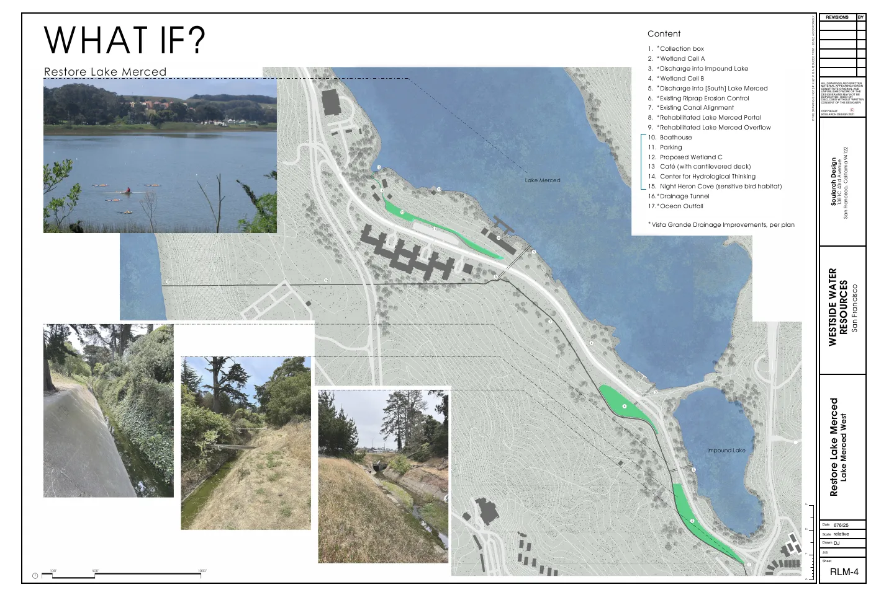

Restore Lake Merced
Recreate. Educate. Research. Restore. A community-led proposal to transform the 9.5-acre Lake Merced West site into a public aquatics, arts, and hydrology hub, and to restore the lake itself so that one day San Franciscans can swim in it again.
Take Action to Support This Project
📍 Location
- Site: Lake Merced West, a 9.5-acre parcel on John Muir Drive along the southwest shore of Lake Merced (former Pacific Rod & Gun Club site), owned by SFPUC and managed by SF Recreation & Parks
- Neighborhood: Lake Merced / Lakeshore / Parkmerced, southwest San Francisco
- District: Supervisor Myrna Melgar (District 7); District 4 (Supervisor Alan Wong) runs to the lake's north shore
- Key Connections: Directly across from the San Francisco Zoo and the Janet Pomeroy Recreation & Rehabilitation Center; Sunset Dunes park and Ocean Beach; Fort Funston; Harding Park and the golf courses ringing the lake; SF State University; Stonestown Galleria; Lakewood Apartments across John Muir Drive
🌱 Project Overview
Restore Lake Merced is a strategic initiative of Westside Water Resources, a San Francisco nonprofit. It treats the Lake Merced West site as both a foothold and a billboard for restoring the entire Lake Merced watershed.
- The problem: Lake Merced is listed by the State of California and the U.S. EPA as a Category 5 impaired water body, one of the most severe classifications. The water is not suitable for human contact.
- Why: For roughly 86 years, human intervention has cut the lake off from the ocean. Historically the lake drained to the Pacific in wet years. Today it is a terminal water body: everything that flows in stays in, concentrating nutrients and pollutants.
- The vision: Restore the lake's water quality and natural water balance so it can be removed from the impaired water bodies list entirely, while building a public recreation, education, and research campus on the shoreline.
- Public, not private: Westside Water Resources plans to develop the 9.5 acres, then give the capital improvements back to the City, with the asset managed by a citizen-run special district: a publicly operated amenity rather than a private concession.
🤝 Stewards & Partners
- Project Lead: Westside Water Resources
- Core Design & Development Team: Water and Power Law Group PC, SCAPE (landscape architecture), Red Dot Studio (architecture), Aquastry (water treatment), Sherwood Design Engineers
- Coalition Partners: CalTrout, Golden Gate Bird Alliance, Pacific Rowing Club, St. Ignatius rowing, Our Children's Earth Foundation, Environmental Advocates, EcoRights, and other conservation and recreation groups
- Education Partners (in discussion): San Francisco Unified School District, City College of San Francisco, San Francisco State University
- Government Partners: SF Recreation & Parks (site manager), SFPUC (property owner), Supervisor Melgar's District 7 office, Supervisor Wong's District 4 office
💰 Potential Funding Sources
- Near-Term: The Rec & Park Lake Merced West RFP offers an opportunity to secure the site; capital to be aggregated from other sources
- Philanthropy & Grants: Foundation and individual philanthropy plus state and federal water quality, habitat, and recreation grants are the first layer of the capital stack
- SFPUC Programs: SFPUC Green Infrastructure Grants and capital programs for the shoreline and John Muir Drive stormwater work; a proposed SFPUC public-education presence at the Center for Hydrological Thinking telling the story of the water system from Hetch Hetchy to the tap
- Lakewood Apartments Stormwater: Westside Water Resources' $2.5M SFPUC Green Infrastructure Grant application to capture rooftop stormwater at the Lakewood Apartments across John Muir Drive was approved but not yet funded, and remains a candidate for a future funding round; that water could feed greening in the street and on the site
- Long-Term: A citizen-run special district could finance the remaining gap through institutional borrowing and manage the completed facility for the public
🗺️ Site Location Map
Site: Lake Merced West, John Muir Drive at the west shore of Lake Merced
Opportunity: A 9.5-acre lakefront parcel, long fenced off, that can anchor restoration of the whole watershed
Interactive map centered on the Lake Merced West parcel along John Muir Drive.
🏗️ Proposed Improvements
The plan follows four keywords, in this order: Recreate, Educate, Research, Restore.
- Recreate: Aquatics Center & Boathouse: A world-class aquatic athletics center and boathouse building on the recreation the lake already hosts: rowing, paddling, and sailing
- Recreate: Volleyball: Courts for the Lake Merced volleyball community, whose players have been passionate early supporters and have already contributed meaningfully to the project
- Recreate: Shoreline Café: A lakeside café with a cantilevered deck over the water
- Educate: Center for Hydrological Thinking: Facilities for science and art centered on hydrology, with a proposed SFPUC presence explaining the whole water system from the Hetch Hetchy highlands to the westside aquifer
- Educate: Living Laboratory: A Lake Merced Center for the Arts and hands-on programs for SFUSD, City College, and SF State students
- Research & Restore: Water Quality: Reduce phosphorus and nitrogen loading from the immediate shoreline with new wetland treatment cells, and restore the lake's chemistry so it can be delisted as an impaired water body
- Restore: Watershed & Flow-Through: Raise the Westside Basin aquifer so the lake once again overflows to the ocean in wet years, ending its status as a terminal water body; rehabilitate the historic Lake Merced portal, overflow, and drainage tunnel to the ocean outfall
- Restore: Native Species: Rehabilitate native fish and aquatic species still found in similar North Coast water bodies, and over the long term reintroduce species lost from Lake Merced, while protecting sensitive bird habitat at Night Heron Cove
- Restore: Vista Grande Trail: Incorporate a public trail into the Vista Grande Canal drainage improvements
- Green John Muir Drive: Rebuild the quarter-mile-plus roadway fronting the site as a model green street: rain gardens, bioswales, and street trees that capture runoff, traffic calming to slow cars through this park zone, and a multi-use path for people walking, running, and biking. Rooftop stormwater from the Lakewood Apartments could feed the plantings. Utility trenching for the site will already puncture the roadway, so putting it back together green is the natural sequence. Green SF Now, a campaign of the Sierra Club, is a strong proponent of a plane to use "depaving" for both natural stormwater benefits and traffic calming.
- Honor John Muir: The road is named for the founder of the Sierra Club, who spent his life arguing that wild water and wild places belong to everyone. A roadway bearing his name that speeds cars past a fenced-off, polluted lake is a contradiction. A green John Muir Drive along a restored, swimmable Lake Merced would be a fitting tribute, and a chance for the Sierra Club's San Francisco members to carry Muir's work into their own neighborhood.
📐 “What If?” Site Concept
Westside Water Resources' four-sheet concept compilation (June 2025) walks from the current fenced site to a restored shoreline. The final sheet keys the concept: wetland cells, rehabilitated portal and overflow, boathouse, café, Center for Hydrological Thinking, Night Heron Cove, and the Vista Grande drainage tunnel to the ocean outfall. Ideas are still evolving; treat this as a general footprint rather than a final design.

Click to enlarge. Concept sheet RLM-4, Westside Water Resources / Soularch Design. See also the Lake Merced West Proposal.
🎯 Project Goals
- A swimmable Lake Merced removed from the state and federal impaired water bodies list
- A living lake with restored flow-through to the ocean and rehabilitated native species
- A public recreation and education campus at Lake Merced West, owned by the City and run for the public
- A regional model for urban watershed stewardship, with John Muir Drive as the poster child for greening a roadway in the spirit of its namesake
📈 Current Status
- Phase: Capacity building and schematic design
- Coalition: Bringing together CalTrout, rowing clubs, bird and environmental advocates, and educational institutions in support of the Lake Merced West proposal
- Funding: $2.5M SFPUC Green Infrastructure Grant for Lakewood Apartments stormwater capture approved but not yet funded; pursuing philanthropy, grants, and funding consultants for the broader project
- Letters of Support: Now being collected; see the buttons at the top of this page
📸 Project Gallery
📰 Related Links
- Westside Water Resources: Restore Lake Merced
- Lake Merced West Proposal (PDF)
- Red Dot Studio: “What If” Meeting Slide Deck
- CA Water Board: Category 5 Impaired Water Bodies List
- SFPUC: Lake Merced's Human and Natural History
- CEQA: Lake Merced West Project Description
- Green SF Now: San Francisco Watersheds 101 webinar with Doug Jacuzzi and Karen Curtiss